Released on November 12, 2009
(Next Release on November 18, 2009)
Saudi Aramco Announces New U.S. Pricing Formula
The U.S. imported slightly more than 1 million barrels of crude oil per day from Saudi Arabia during the first 8 months of 2009. Despite a decline of more than 33 percent compared to the same period in 2008, Saudi Arabia was still the third largest source of U.S. crude oil imports during the first 8 months of this year, according to EIA import data.
Saudi Aramco recently announced that, effective in January 2010, it will price crude oil delivered to the U.S. Gulf Coast market based on the Argus Sour Crude Index (ASCI) published by Argus Media. The new pricing formula will replace one based on a West Texas Intermediate (WTI) spot index published by McGraw Hill's Platts news service that Aramco has used since 1994. According to media reports, other producers shipping mostly medium and sour crude oil grades to the U.S. market – including Venezuela, Kuwait and Iraq – are considering using the ASCI to price their exports. Sour crude accounts for approximately 60 percent of the crude oil used by U.S. refiners, according to industry reports.
WTI is a light, sweet crude oil that trades in the inland U.S. pipeline market centered in Cushing, OK (and is the crude oil price EIA forecasts in the Short-Term Energy Outlook, the most recent edition of which was published on November 10). WTI is the colloquial name for oil deliverable against the New York Mercantile Exchange’s (NYMEX) light, sweet crude oil futures contract. Price differentials for such crudes relative to the medium and heavy sours are volatile, which complicates pricing and hedging for buyers and sellers of long-haul sour crudes.
The ASCI is based on spot trading in the Mars, Poseidon, and Southern Green Canyon crude oil grades, all from the Gulf of Mexico. The largest of the traded streams is the Mars Blend. The ASCI is a volume-weighted price index, and is published as a differential to the NYMEX first-nearby WTI futures contact (e.g., -$5.00 per barrel). Adding the differential to the first-nearby NYMEX WTI futures contract’s price converts the ASCI differential to the ASCI fixed price; e.g., $80.00 WTI + (-$5.00 ASCI differential) = $75.00 per barrel ASCI fixed price.
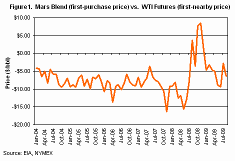
The volatility in the price difference between Mars Blend and WTI first-nearby futures suggests the utility of a Gulf Coast sour benchmark more closely aligned to supply/demand dynamics in that particular market (Figure 1). In contrast, if the differential were roughly constant there would be little value-added from reference to the ASCI price differential.
NYMEX's parent company, the CME Group, expects to launch a cash-settled trade-month swap futures contract settling against the ASCI on November 23. A swap futures contract is a financially settled contract. Buyer and seller agree to settle based on the terminal value of the index (e.g., the calendar-month average or the terminal value of the index). Such contracts do not settle with physical delivery of the underlying commodity. CME Group also stated in a press release it plans to introduce a physically delivered U.S. Gulf Coast Sour Crude Oil futures contract by the end of January 2010, with deliverable crude oil grades "that closely mirror the ASCI."
The ASCI differential index could evolve into a key pricing benchmark. Trading price differentials, known as "basis" trading in commodity markets, is common in global agriculture markets (see, for example, the USDA Economic Research Service's discussion of hedging and basis risk). Basis markets for North American natural gas are highly developed as well, referencing the widely traded Henry Hub price benchmark. A cash-settled ASCI swap could lead to greater trading volumes for WTI futures if market participants find basis hedging valuable. If a competing fixed-price sour futures contract evolves out of the ASCI, and is accepted by market participants, it will be because it serves a market need the WTI contract does not.
U.S. Average Gasoline Price Slips
For the first time since October 5, 2009, the U.S. average price for regular gasoline decreased, slipping three cents to $2.67 per gallon, but staying $0.44 above a year ago. Prices declined across all the regions. The East Coast average dropped about a penny to $2.66 while the Midwest recorded the largest decline, of nearly 6 cents, to $2.61 per gallon. The price on the Gulf Coast, the lowest regional average, dropped nearly four cents to $2.53 per gallon. The prices in the Rocky Mountains and on the West Coast were relatively unchanged at $2.60 and $2.91 per gallon, respectively. In California, the average slipped about a penny to $2.98 per gallon.
The national average price for diesel fuel went down a penny to $2.80 per gallon, $0.14 per gallon below last year. Prices decreased in most regions of the country with the East Coast and Midwest averages each slipping about a penny, to $2.82 and $2.78, respectively. The prices on the Gulf Coast and the West Coast slipped only a fraction of a cent, remaining at $2.75 and $2.91, respectively. The average in California was essentially unchanged at $2.97 per gallon. The Rocky Mountain price inched up just over a penny to $2.82 per gallon.
Propane Stocks Fall Again
Inventories of propane fell for the fourth week in a row after peaking in early October, the highest level since November 1998. Total U.S. propane inventories fell 1.2 million barrels to 68.4 million barrels. The Gulf Coast regional stocks fell 0.7 million barrels, while the Midwest region dropped by 0.6 million barrels. Inventories in the East Coast region drew 0.1 million barrels while the Rocky Mountain/West Coast region added 0.2 million barrels of inventory. Propylene non-fuel use inventories decreased their share of total propane/propylene inventories from 3.4 percent to 3.3 percent.
Residential Heating Fuel Prices Increase
Residential heating oil prices rose during the period ending November 9, 2009. The average residential heating oil price gained 1.1 cents per gallon last week to reach 274.5 cents per gallon, a decrease of 19.6 cents per gallon from the same time last year. Wholesale heating oil prices decreased 1.5 cents per gallon to reach 206.1 cents per gallon, 3.3 cents per gallon lower than at this time last year.
The average residential propane price increased 3.2 cents per gallon to reach 221.6 cents per gallon. This was a decrease of 24.7 cents per gallon compared to the 246.3 cents per gallon average from the same period last year. Wholesale propane prices rose 2.7 cents per gallon, from 116.4 cents per gallon to 119.1 cents per gallon. This was an increase of 26.2 cents per gallon when compared to the November 10, 2008 price of 92.9 cents per gallon.
Text from the previous editions of “This Week In Petroleum” is now accessible through a link at the top right-hand corner of this page.
| Retail Prices (Cents Per Gallon) | |||||||
| 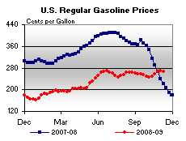 | 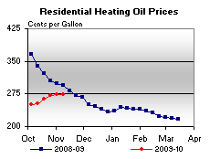 | ||||||
| 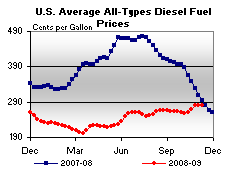 | 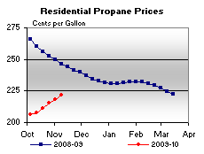 | ||||||
| Retail Data | Changes From | Retail Data | Changes From | ||||
| 11/09/09 | Week | Year | 11/09/09 | Week | Year | ||
| Gasoline | 266.6 | Heating Oil | 274.5 | ||||
| Diesel Fuel | 280.1 | Propane | 221.6 | ||||
| Spot Prices (Cents Per Gallon*) | |||||||||||||||||||||||||||||||||||
| 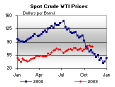 | 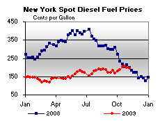 | ||||||||||||||||||||||||||||||||||
| 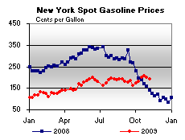 | 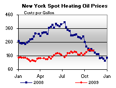 | ||||||||||||||||||||||||||||||||||
|
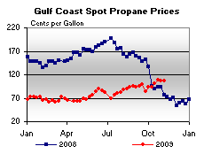 | ||||||||||||||||||||||||||||||||||
| *Note: Crude Oil WTI Price in Dollars per Barrel. | |||||||||||||||||||||||||||||||||||
| Stocks (Million Barrels) | |||||||
| 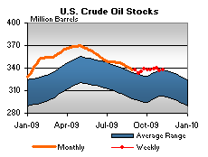 | 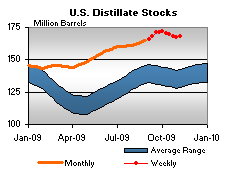 | ||||||
| 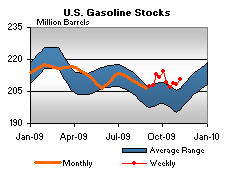 | 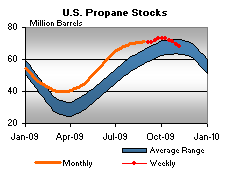 | ||||||
| Stocks Data | Changes From | Stocks Data | Changes From | ||||
| 11/06/09 | Week | Year | 11/06/09 | Week | Year | ||
| Crude Oil | 337.7 | Distillate | 167.7 | ||||
| Gasoline | 210.8 | Propane | 68.424 | ||||